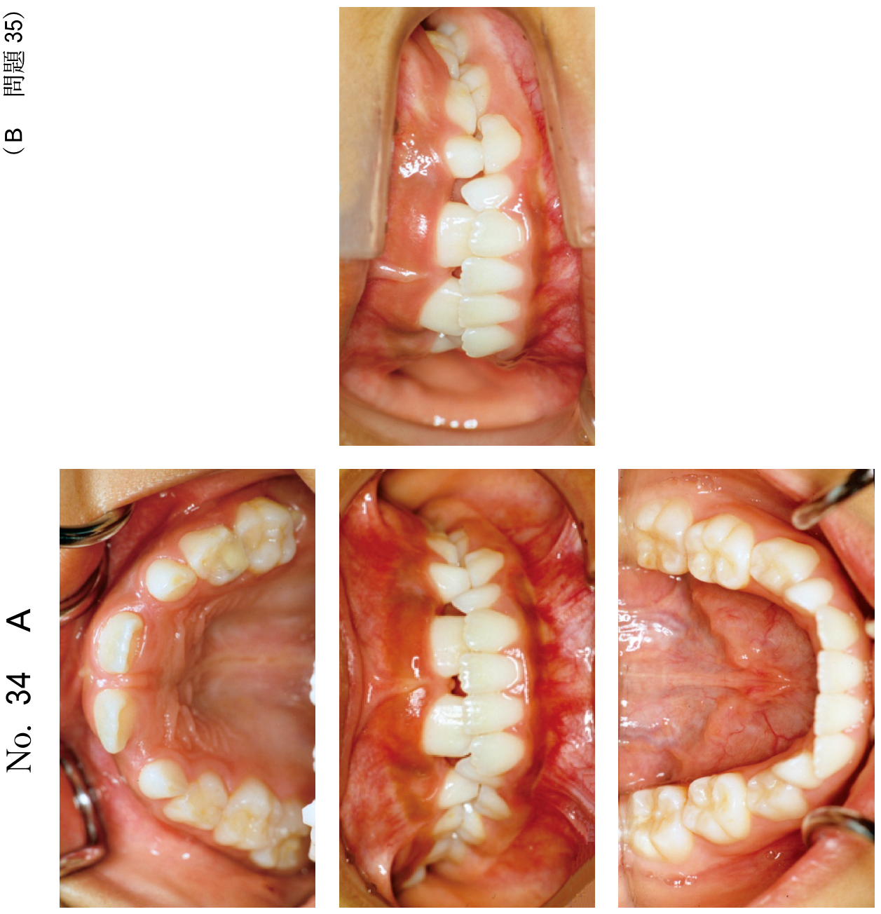

ラバーダム防湿
ラバーダム防湿とは
ラバーダム防湿（rubber dam isolation technique）は、患歯を唾液による汚染から防護するための処置である。ラバーダムシートを装着して患歯のみを露出させる。
ラバーダム防湿の利点
- 唾液からの汚染防止（無菌的処置）
- 手術野の明視化（頬粘膜・舌を圧排）
- 軟組織の保護
- 器具の誤飲防止
- 薬剤の漏洩防止（完全ではない）
欠点・禁忌
- 歯根端方向がわかりにくくなる
- 不快感を訴える患者には適さない
- 鼻呼吸が困難な患者には使用できない
- ラテックスアレルギー患者 → ノンラテックス（シリコーンゴム）を使用
使用器具・材料
| 器具 | 説明 |
|---|---|
| ラバーダムシート | ラテックス（天然ゴム）またはノンラテックス（シリコーンゴム） |
| クランプ | 有翼型と無翼型がある。スプリングは遠心側に |
| クランプフォーセップス | クランプを患歯に装着するための器具（YS型、Brewer型） |
| ラバーダムパンチ | シートに穴を開ける。ターレットで穴の大きさを選択 |
| ラバーダムフレーム | シートを張って術野を広く見やすくする（Youngのフレーム等） |
| ラバーダムナプキン | アレルギー・違和感がある患者に使用 |
| 排唾管 | 唾液が溜まるのを排除するために使用 |
隔壁形成法
歯冠部の崩壊が大きくクランプがかけられない場合や、装着しても隙間から唾液が浸入する場合に行う暫間的修復。
- 現在ではコンポジットレジンを用いることが多い
- 根管口がレジンで封鎖されないよう、ストッピングなどで仮封しておく
- 金属冠（アルミキャップ、カッパーバンド）を利用する方法もある
隔壁形成の目的（過去問で出題）
- 仮封の強化
- 術野の汚染防止
過去問
104B43
45歳の男性。下顎左側第一大臼歯の咬合痛を主訴として来院した。感染根管治療を行うこととした。クラウンと感染象牙質とを除去した後の口腔内写真（別冊No.42A）と感染根管治療開始時の口腔内写真（別冊No.42B）とを別に示す。
感染根管治療開始前に行った処置の目的はどれか。2つ選べ。


a 歯質の保存
b 咬合の維持
c 仮封の強化
d 審美性の回復
e 術野の汚染防止
b 咬合の維持
c 仮封の強化
d 審美性の回復
e 術野の汚染防止
正解：c, e
【解説】写真Aでは歯冠部が大きく崩壊した状態、写真Bでは隔壁形成を行いラバーダム防湿をしている状態が確認できる。歯冠部の崩壊によりクランプがかけられない、または隙間から唾液が浸入する場合に隔壁形成を行う。目的は仮封の強化と術野の汚染防止である。
110C86
ラバーダム防湿下で髄室開拡を行う際に起こる偶発症はどれか。1つ選べ。
a 皮下気腫
b 器具の誤飲
c 髄床底穿孔
d 器具の根管内破折
e 軟組織の化学的損傷
b 器具の誤飲
c 髄床底穿孔
d 器具の根管内破折
e 軟組織の化学的損傷
正解：c
【解説】ラバーダム防湿下では器具の誤飲は防止できる。軟組織の化学的損傷もラバーダムで保護されるため起こりにくい。髄室開拡時に起こりうる偶発症は髄床底穿孔である。これはラバーダム防湿とは関係なく、過度な切削により発生する。皮下気腫はエアタービン使用時などに起こるが、髄室開拡との直接的関連は低い。